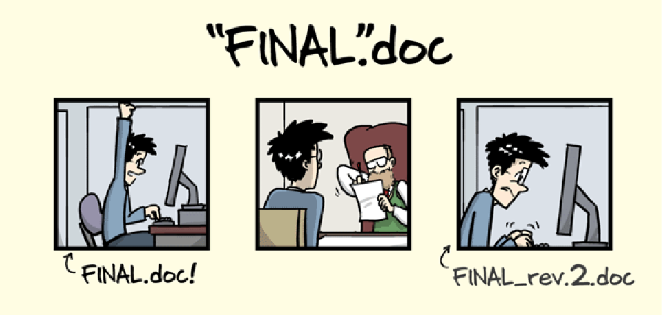
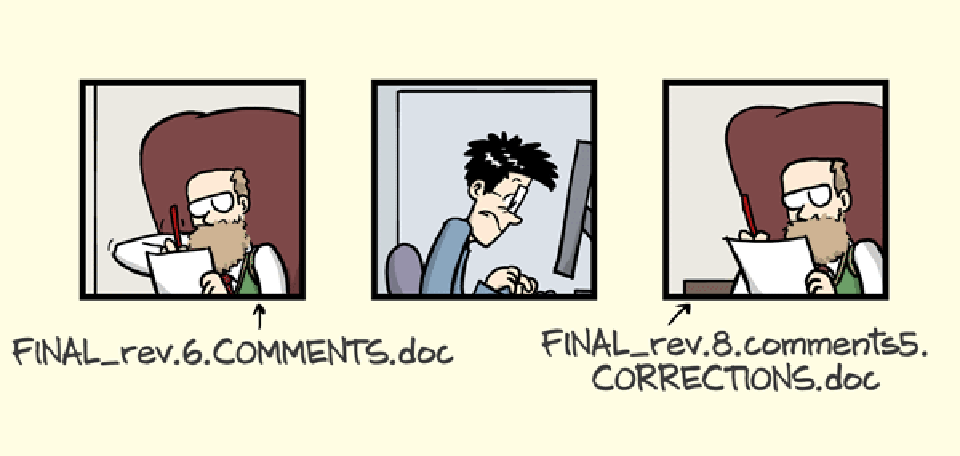
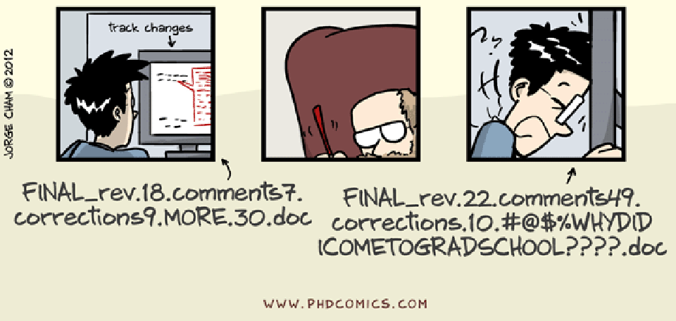
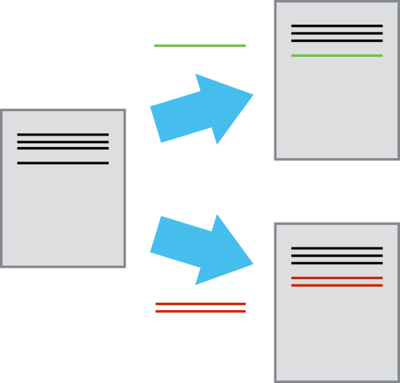
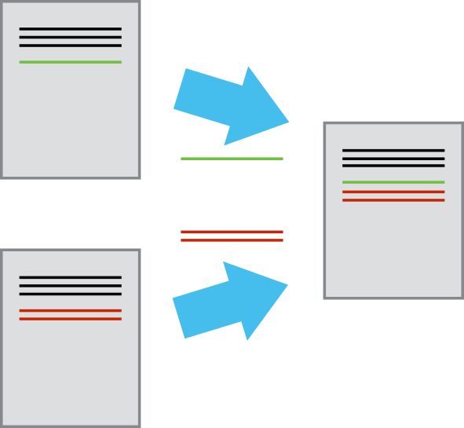

Practical Data Analysis with Python
Dr. Andreas Hilboll
13 April 2018
Table of Contents
Disclaimer
Parts of the material presented in these slides is
Copyright © Software Carpentry
Introduction to Version Control: Git
What is Version Control (1)
- Nothing that is committed to version control is ever lost (unless you work really, really hard at it).
- All old versions of files are saved …
- … so it’s always possible to go back in time to see exactly
- who wrote what on a particular day, or
- what version of a program was used to generate a particular set of results.
What is Version Control (2)
- Since we have this record of who made what changes when, we
- know whom to ask if we have questions later on
- can revert to a previous version, much like the “undo” feature in an editor.
What is Version Control (3)
- When several people collaborate in the same project, it’s possible to accidentally overlook or overwrite someone’s changes.
- The version control system automatically notifies users whenever there’s a conflict between one person’s work and another’s.
What is Version Control (4)
- Teams are not the only ones to benefit from version control: lone students can benefit immensely.
- Keeping a record of what was changed, when, and why is extremely useful for all researchers if they ever need to come back to the project later on (e.g., a year later, when memory has faded).
What can version control do for you?
You all know this situation:



We’ve all been in this situation before:
- it seems ridiculous to have multiple nearly-identical versions of the same document
- some word processors let us deal with this a little better, such as Microsoft Word’s “Track Changes” or Google Docs’ version history.
Discussion (1)
- Imagine you drafted an excellent paragraph for a paper you are writing, but later ruin it. How would you retrieve the excellent version of your conclusion? Is it even possible?
Discussion (2)
- Imagine you have 5 co-authors. How would you manage the changes and comments they make to your paper? If you use LibreOffice Writer or Microsoft Word, what happens if you accept changes made using the Track Changes option? Do you have a history of those changes?
Key Points
- Version control is like an unlimited ‘undo’.
- Version control also allows many people to work in parallel.
Version control can make things easier
- start with a base version of the document
- save just the changes you made at each step of the way
- think of it as a tape: if you rewind the tape and start at the base document, then you can play back each change and end up with your latest version.

- think of changes as separate from the document itself
- “play back” different sets of changes onto the base document to getting different versions of the document
- e.g., two users can make independent sets of changes based on the same document.

- if there aren’t conflicts, you can even play two sets of changes onto the same base document.
- the result will be the base document with the two changes applied

- version control is a tool keeping track of these changes for us and helps us version and merge our files
- It allows you to decide which changes make up the next document version, called a commit, and keep useful metadata about them.
- e.g., think of your thesis before giving it to a friend for proof-reading - you will always know exactly which version your friend commented on
- The complete history of commits for a particular project and their metadata make up a repository.
- Repositories can be kept in sync across different computers facilitating collaboration among different people.
Learning the basics of Git
Today, we will follow (some parts of) a free lecture created by the Software Carpentry project:
(Link: http://unihb.eu/EdTpaRb2)
Homework
Complete the following episodes from the Software Carpentry lecture material:
Use the GitHub account you created during your homework preparations.